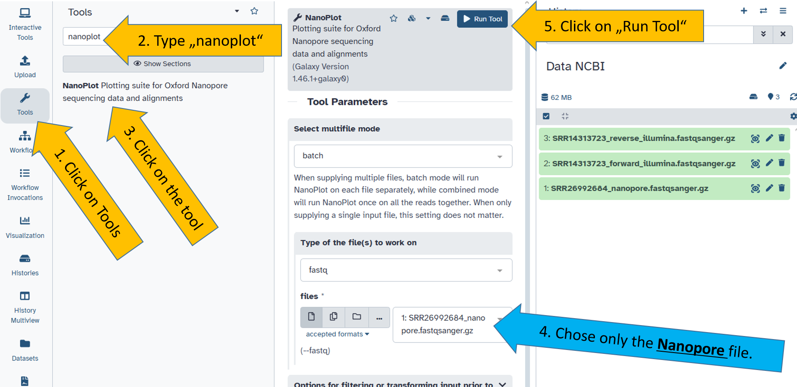

Getting started with Galaxy
A short introduction to Galaxy
To get started with the Galaxy platform, complete the following tutorial. It takes about 40 minutes and will familiarize you with the interface and the most important Galaxy terms. You will also upload your first data.
Go through and finish the tutiral “A short introduction to Galaxy”!
The tutorial is available in several languages:
 Galaxy Introduction Tutorial (GTN)
Galaxy Introduction Tutorial (GTN)
 Galaxy Introduction Tutorial (GTN, automatic translation)
Galaxy Introduction Tutorial (GTN, automatic translation)
Starting with training data
Once the tutorial is complete, we can begin with our own data. I hope you enjoy it.
Let’s get started!
Create a new history
Now that the tutorial is complete, we can plan the work with our own data. To do this, we create a new, empty history. Then we rename the history to Data NCBI
Rename the new history
After creating the new history, we rename it. With the new name, it can be clearly identified and cannot be confused with previous analyses.
Download sequencing data
The sequence data that provided here is taken from one of my publications and is intended to serve as an example. The sequence data has been published on NCBI SRA and is freely available. The sequenced sample is a large dsDNA virus and the data is small in size. The small size makes it perfect, easy and quick to handle.
| Isolate | BioSample | NCBI SRA (Illumina) | NCBI SRA (Nanopore) |
|---|---|---|---|
| BmNPV-My | SAMN18849911 | SRR14313723 | SRR26992684 |
Wennmann, J.T., Lim, F.S., Senger, S., Gani, M., Jehle, J.A., Keilwagen, J (2024). Haplotype determination of the Bombyx mori nucleopolyhedrovirus by Nanopore sequencing and linkage of single nucleotide variants. Journal of General Virology. 105 (5), 001983. [https://doi.org/10.1099/jgv.0.001983]
Please download the sequence data directly and save it temporarily on your computer. We will then upload it directly to your newly created Galaxy history “Data NCBI.”
Follow this link to download the Illumina data and save it on your computer. You should download the forward and reverse reads in two separate files:
üíæ [Illumina forward reads]
üíæ [Illumina reverse reads]Follow the link to download the Nanopore reads:
üíæ [Nanopore reads]
You should now have three files saved on your computer.
Upload your data to Galaxy
Sequence data is usually obtained directly in fastq or fastqsanger format. It is then uploaded to the Galaxy platform. We will do this in the next step.
- You have the three files.
- Go to the folder where you saved the files.
- Go to usegalaxy.eu and click on “Upload.”
- Drag your files into the upload window (drag and drop).
- Click on “Start.” The upload will begin.
- Once all files have been uploaded, click on “Close.”
Now you have to wait until all files are completely uploaded. This may take a moment. The upload is complete when the files appear green in the history.
Status of files in your history
Files can have four statuses in your history. Only green files and files being processed can be worked on further.
| Color | Status | Meaning |
|---|---|---|
| üü© Green | Ready | File is ready to use |
| üüß Orange | Running/Processing | File is being processed (job still running) |
| ⬜ Gray | Queued | File is waiting to run |
| üü• Red | Error | File has failed (an error occurred) |
Run your first Galaxy tools
Once the data has been uploaded, we want to do something with it. We want to analyse it, not just look at it. But before we analyse it, it’s important that we get to know the data well. It’s important to know whether the sequencing worked well. We also want to know how good the quality of the sequencing is.
There are two tools we can use for Illumina and Nanopore data.
Please practice to select some tools. Go to web interface of usegalaxy.eu and click on tools. In the tools menu you can search for tools you would like to apply to your data. Please search for two tools and select them:
- falco
- nanoplot
Quality check of Nanopore reads
At first we start the tool nanoplot on the Nanopore data. The file’s name should be SRR26992684_nanopore.fastqsanger.gz and it is the input for the tool nanoplot.

Quality check of Illumina reads
Next, we use the falco tool, which we run on the forward file of the Illumina data. Here we chose the file SRR14313726_forward_illumina.fastqsanger.gz.
The correct files for the right tools
Not all files can be read, processed or analysed by all tools. You learn this over time and with increasing experience.
A common mistake is selecting the wrong files for the wrong tool. Falco is for short reads (Illumina data) and Nanoplot is for long reads. Therefore, the following combination must be selected:
falco=SRR14313726_forward_illumina.fastqsanger.gz
falco=SRR14313726_reverse_illumina.fastqsanger.gznanoplot=SRR26992684_nanopore.fastqsanger.gz
Reviewing the output and evaluating the quality
To view the results of the tools, click on the eye icon next to the outputs. Make sure you select the correct output files. They are called html report for the nanoplot tool and webpage for the falco tool.
Click on the eye of one of the files. The results should open in the center panel.
The results are discussed together in the group.
If you would like to learn how to evaluate and analyse the output of
falco(orfastqc, which is the predecessor offalco) andnanoplotyourself, you can do so in the following tutorial:Galaxy Training Tutorial - Quality Control.
Enjoy reading!